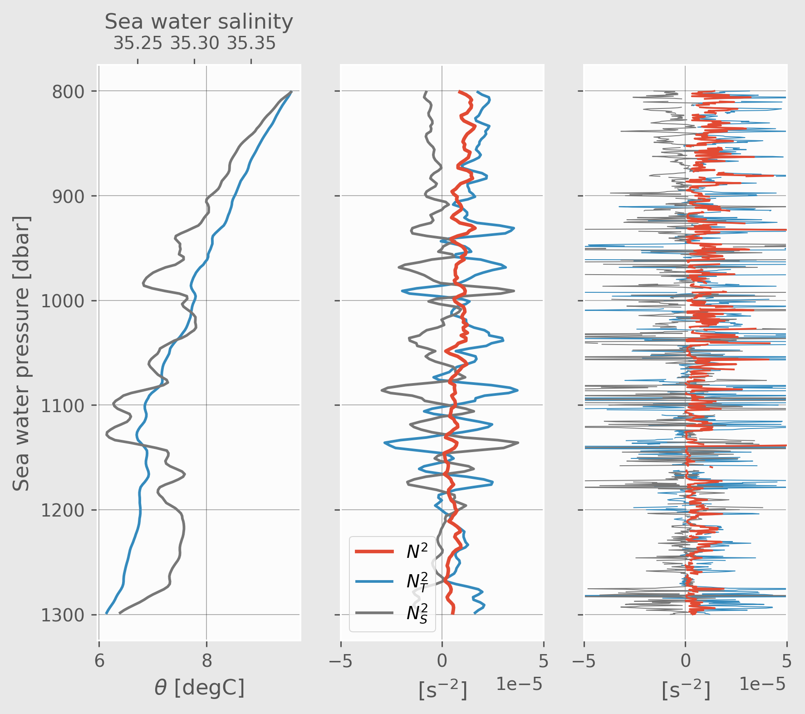

Contents
%matplotlib inline
plt.rcParams["figure.dpi"] = 140
plt.rcParams["figure.facecolor"] = (0.91, 0.91, 0.91)
plt.rcParams["axes.facecolor"] = (0.99,)*3
plt.rcParams["grid.color"] = (0.25,)*3
plt.rcParams["grid.alpha"] = 0.3
micro.pres.attrs["bounds"] = "pres_err"
def plot_pop_natre_meso_micro(ax):
mesomicrocolor = "darkorchid"
(-1 * pop_natre.DISS).cf.plot(
ax=ax, lw=1.5, color=mesomicrocolor, label="POP 1/10° meso $→$ micro"
)
dcpy.plots.fill_between_bounds(
micro,
"residual",
y="pres",
color=mesomicrocolor,
label="NATRE meso $→$ micro",
ax=ax,
)
f, ax = plt.subplots(1, 3, sharey=True, sharex=True, constrained_layout=False)
### Mesoscale budget
pop_natre.BC.cf.plot(ax=ax[0], label="POP 1/10° h. stir $⟨u_e^h θ_e⟩.∇_hθ_m$")
(np.abs(pop_natre.PKC)).cf.plot(ax=ax[0], label="POP 1/10° v. stir $-⟨w_eθ_e⟩.∂_zθ_m$")
#(-1 * pop_natre.VMIX).cf.plot(color="sienna", ax=ax[0], label="POP VMIX")
#(-1 * pop_natre.HDIFF).cf.plot(ax=ax[0], label="POP HDIFF", marker="x", ls="none")
### Microscale budget
plt.sca(ax[1])
dcpy.plots.fill_between_bounds(
micro, "KρTz2", y="pres", color="k", label="FP2005: $⟨w_t T_t⟩ ∂_zθ_m$"
)
dcpy.plots.fill_between_bounds(
micro, "chib2", y="pres", color="C0", label="FP2005: $⟨χ⟩/2$"
)
### Parameterizations
cole_var.plot(
y="pres", label="$K_e^{cole} |∇_hT^{argo}|²$", color="k", ls="--", ax=ax[2]
)
#groeskamp.eddy_var_0.plot(
# y="pres",
# label="$K_e^{G2020unsupp} |∇_hT^{cole}|²$",
# color="limegreen",
# ls="-.",
# ax=ax[2],
#)
groeskamp.eddy_var.plot(
y="pres", label="$K_e^{G2020} |∇_hT^{argo}|²$", color="limegreen", ls="--", ax=ax[2]
)
### Cleanup
for idx, axx in enumerate(ax):
plot_pop_natre_meso_micro(axx)
axx.set_xscale("log")
axx.set_xlabel("")
axx.legend(loc="upper center", bbox_to_anchor=(0.5, -0.15))
axx.grid(True, which="both", lw=0.5)
axx.set_xlabel("[$°C^2/s$]")
# ax[1].set_xlabel("Variance production or dissipation [°C²/s]")
#f.suptitle("NATRE")
ax[0].set_title("(a) Mesoscale budget", fontsize="medium")
ax[1].set_title("(b) Microscale budget", fontsize="medium")
ax[2].set_title("(c) Parameterizations", fontsize="medium")
ax[0].set_xlim([1e-11, 1e-8])
ax[0].set_ylim([1900, 180])
dcpy.plots.clean_axes(ax)
f.set_size_inches((9.2, 5))
# f.savefig("../images/natre-meso-micro-param.png")

v
f, ax = plt.subplots(1, 1)
for cycle in [0, 3, 5]:
pop = pop_1deg_natre.isel(cycle=cycle)
pop = pop.where(pop.z_t.notnull(), drop=True)
pop = pop.cf.add_bounds("z_t")
ybounds = pop.z_t_bounds
bdim = pop.cf.get_bounds_dim_name("z_t")
yedges = np.append(ybounds.isel({bdim: 0}).data, ybounds[-1, -1])
ax.stairs(
pop.RediVar,
edges=yedges,
orientation="horizontal",
lw=2,
label=f"POP 1° cycle={cycle}",
)
ax.set_ylim((5000, 200))
mesomicrocolor = "darkorchid"
(-1 * pop_natre.DISS).cf.plot(ax=ax, lw=1.5, color=mesomicrocolor, label="POP 1/10°")
ax.set_xscale("log")
ax.legend(bbox_to_anchor=(1,1))
f.set_size_inches((4, 6))

profile = natre.isel(latitude=3, longitude=6)
profile["NT2"] = (
-9.81
* dcpy.eos.alpha(profile.salt, profile.temp, profile.pres)
* profile.theta.interpolate_na("pres").differentiate("pres")
)
profile["NS2"] = (
9.81
* dcpy.eos.beta(profile.salt, profile.temp, profile.pres)
* profile.salt.interpolate_na("pres").differentiate("pres")
)
smoothed = (
profile
.rolling(pres=21, center=True, min_periods=1)
.mean()
.coarsen(pres=5, boundary="trim")
.mean()
.sel(pres=slice(800, 1300))
)
smoothed["NT2"] = (
-9.81
* dcpy.eos.alpha(smoothed.salt, smoothed.temp, smoothed.pres)
* smoothed.theta.interpolate_na("pres").differentiate("pres")
)
smoothed["NS2"] = (
9.81
* dcpy.eos.beta(smoothed.salt, smoothed.temp, smoothed.pres)
* smoothed.salt.interpolate_na("pres").differentiate("pres")
)
f, ax = plt.subplots(1, 3, sharey=True)
smoothed.theta.cf.plot(ax=ax[0], color="C1")
axS = ax[0].twiny()
axS.grid(False)
smoothed.salt.cf.plot(color="C3", ax=axS)
# ax2 = ax[0].twiny()
# smoothed.gamma_n.cf.plot(color="k", ax=ax2)
# ax2.grid(False)
smoothed.N2.cf.plot(lw=2, zorder=5, ax=ax[1])
smoothed.NT2.cf.plot(ax=ax[1])
smoothed.NS2.cf.plot(color="C3", ax=ax[1])
ax[1].set_xlim([-5e-5, 5e-5])
ax[1].legend(["$N^2$", "$N_T^2$", "$N_S^2$"])
profile.N2.sel(pres=slice(800, 1300)).cf.plot(lw=1, zorder=5, ax=ax[2])
profile.NT2.sel(pres=slice(800, 1300)).cf.plot(ax=ax[2], lw=0.5)
profile.NS2.sel(pres=slice(800, 1300)).cf.plot(color="C3", ax=ax[2], lw=0.5)
ax[2].set_xlim([-5e-5, 5e-5])
#ax[2].legend(["$N^2$", "$N_T^2$", "$N_S^2$"])
dcpy.plots.clean_axes(ax)
[aa.set_title("") for aa in ax]
axS.set_title("")
ax[1].set_xlabel("[s$^{-2}$]")
f.set_size_inches((7, 6))
